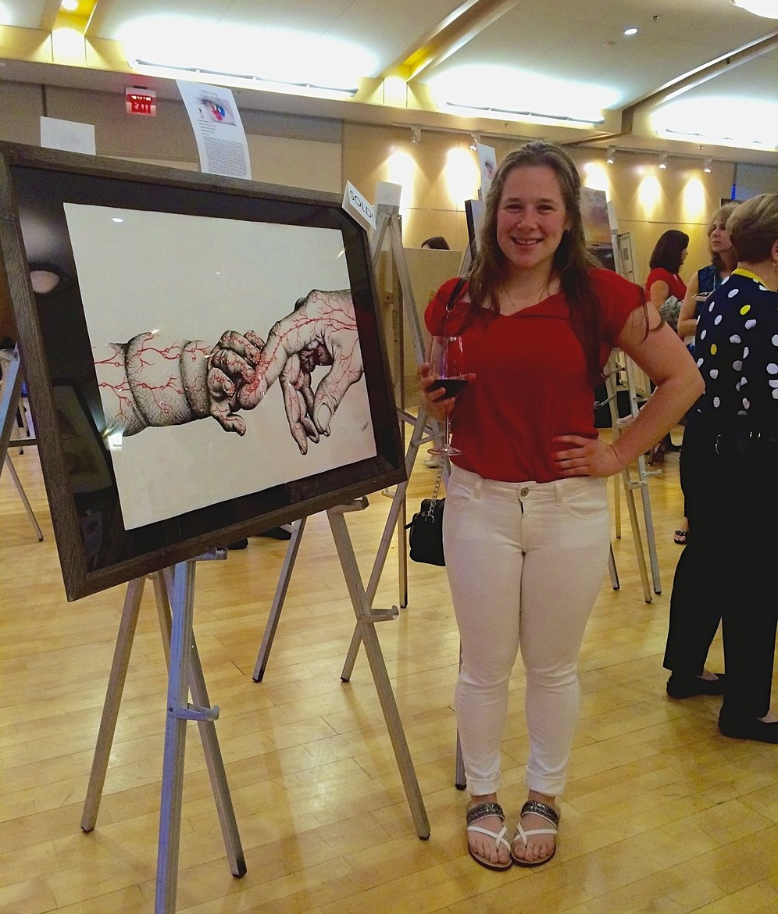

Artful Living is an annual juried art show and fundraiser hosted by the non-profit Britepaths, formerly Our Daily Bread. Britepaths focuses on supporting families and helping them achieve financial self-sufficiency. They offer financial literacy classes, mentoring support, and food assistance. Art pieces were available for purchasing, in which case half the funds were donated to the Britepaths organization. The theme for 2016's event and art pieces was "Seeing the Beauty Within".
More information at Britepaths - Artful Living 2016
My piece was purchased for $200.
Description delivered with piece: Touch is a critical part of life. While this sense may be de-emphasized or ignored in our daily lives, its impact within our body and mind is no less significant. Trust and communication can be achieved verbally and visually. But rarely do people realize the power of touch. Within our bodies, we have a complex network of neurons and signaling pathways that allow us to physically communicate. A simple high-five or hug actually triggers neural responses within the body that can induce adrenaline, happiness, and other powerful emotions that may have been difficult to articulate in words. In this piece, I wanted to highlight how dynamic this sense really is. This newborn is not simply touching his mother, the firing neurons allow the child to form a bond of unimaginable strength to his mother. Science has shown this touch, mediated by neurons through only a few small fingers, immediately starts impacting this child’s future behaviors and social interactions. In turn, a mother’s body develops her own physical response and reaction to such a life-changing event. At this time of life when communication barriers are most present, touch shows its unwavering power. I hope in this piece one will see the beauty within the human body, within our natural biology, and within touch.